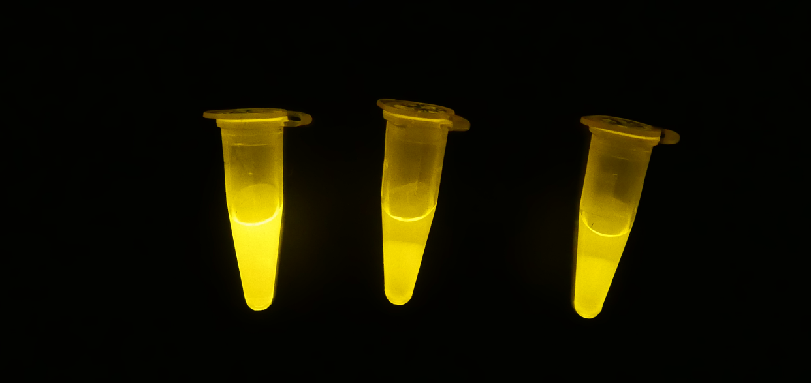

EXPERIMENT
To accomplish making our DNA nanodevice, DNA Mochi Robot, we conduct experiments with the goal of collecting enough resuls of all steps shown in the under figure.
In this page, our conducted experiments were divided into Wet Experiment Section and Dry (Simulation) Experiment Section.

▽Click under images to each section▽

WET